Mechanical science - Friction
Friction
At the end of this chapter you should be able to:
- understand dynamic or sliding friction
- appreciate factors which affect the size and direction of frictional forces
- define coefficient of friction, $\mu$
- perform calculations involving $F=\mu N$
- state practical applications of friction
- state advantages and disadvantages of frictional forces
- understand friction on an inclined plane
- perform calculations on friction on an inclined plane
- calculate the efficiency of a screw jack
15.1 Introduction to friction
When an object, such as a block of wood, is placed on a floor and sufficient force is applied to the block, the force being parallel to the floor, the block slides across the floor. When the force is removed, motion of the block stops; thus there is a force which resists sliding. This force is called dynamic or sliding friction. A force may be applied to the block, which is insufficient to move it. In this case, the force resisting motion is called the static friction or stiction. Thus there are two categories into which a frictional force may be split:
- dynamic or sliding friction force which occurs when motion is taking place, and
- static friction force which occurs before motion takes place.
There are three factors that affect the size and direction of frictional forces.
- The size of the frictional force depends on the type of surface (a block of wood slides more easily on a polished metal surface than on a rough concrete surface).
- The size of the frictional force depends on the size of the force acting at right angles to the surfaces in contact, called the normal force; thus, if the weight of a block of wood is doubled, the frictional force is doubled when it is sliding on the same surface
- The direction of the frictional force is always opposite to the direction of motion. Thus the frictional force opposes motion, as shown in Figure 15.1.
Figure 15.1
15.2 Coefficient of friction
The coefficient of friction, $\boldsymbol{\mu}$, is a measure of the amount of friction existing between two surfaces. A low value of coefficient of friction indicates that the force required for sliding to occur is less than the force required when the coefficient of friction is high. The value of the coefficient of friction is given by:
Transposing gives:
frictional force $=\mu \times$ normal force, i.e. $\quad F=\mu N$
The direction of the forces given in this equation is as shown in Figure 15.2.
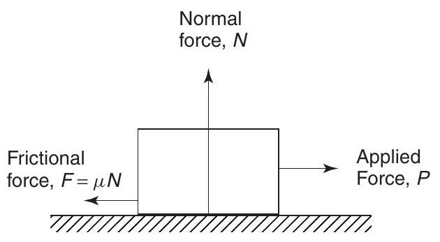Figure 15.2
The coefficient of friction is the ratio of a force to a force, and hence has no units. Typical values for the coefficient of friction when sliding is occurring, i.e. the dynamic coefficient of friction, are:
| For polished oiled metal surfaces | less than 0.1 |
| For glass on glass | 0.4 |
| For rubber on tarmac | close to 1.0 |
The coefficient of friction ( $\mu$ ) for dynamic friction is, in general, a little less than that for static friction. However, for dynamic friction, $\mu$ increases with speed; additionally, it is dependent on the area of the surface in contact.
Problem 1. A block of steel requires a force of 10.4 N applied parallel to a steel plate to keep it moving with constant velocity across the plate. If the normal force between the block and the plate is 40 N , determine the dynamic coefficient of friction.
As the block is moving at constant velocity, the force applied must be that required to overcome frictional forces, i.e. frictional force, $F=10.4\mathrm{~N}$; the normal force is 40 N , and since $F=\mu N$, $$ \mu=\frac{F}{N}=\frac{10.4}{40}=0.26 $$ i.e. the dynamic coefficient of friction is $\mathbf{0.26}$
Problem 2. The surface between the steel block and plate of Problem 1 is now lubricated and the dynamic coefficient of friction falls to 0.12 . Find the new value of force required to push the block at a constant speed.
The normal force depends on the weight of the block and remains unaltered at 40 N . The new value of the dynamic coefficient of friction is 0.12 and since the frictional force $F=\mu N, F=0.12 \times 40=4.8\mathrm{~N}$. The block is sliding at constant speed, thus the force required to overcome the frictional force is also 4.8 N , i.e. the required applied force is 4.8 N .
Problem 3. The material of a brake is being tested and it is found that the dynamic coefficient of friction between the material and steel is 0.91. Calculate the normal force when the frictional force is 0.728 kN .
The dynamic coefficient of friction, $\mu=0.91$ and the frictional force, $F=0.728\mathrm{~kN}=728\mathrm{~N}$ Since $F=\mu N$, then normal force, $$ N=\frac{F}{\mu}=\frac{728}{0.91}=800\mathrm{~N} $$ i.e. the normal force is 800 N .
Now try the following exercise
Exercise 75 Further problems on the coefficient of friction
- The coefficient of friction of a brake pad and a steel disc is 0.82 . Determine the normal force between the pad and the disc if the frictional force required is 1025 N . [1250 N]
- A force of 0.12 kN is needed to push a bale of cloth along a chute at a constant speed. If the normal force between the bale and the chute is 500 N , determine the dynamic coefficient of friction. [0.24]
- The normal force between a belt and its driver wheel is 750 N . If the static coefficient of friction is 0.9 and the dynamic coefficient of friction is 0.87 , calculate (a) the maximum force which can be transmitted, and (b) maximum force which can be transmitted when the belt is running at a constant speed. [(a) 675 N (b) 652.5 N ]
15.3 Applications of friction
In some applications, a low coefficient of friction is desirable, for example, in bearings, pistons moving within cylinders, on ski runs, and so on. However, for such applications as force being transmitted by belt drives and braking systems, a high value of coefficient is necessary.
Problem 4. State three advantages, and three disadvantages of frictional forces.
Instances where frictional forces are an advantage include:
- Almost all fastening devices rely on frictional forces to keep them in place once secured, examples being screws, nails, nuts, clips and clamps.
- Satisfactory operation of brakes and clutches rely on frictional forces being present.
- In the absence of frictional forces, most accelerations along a horizontal surface are impossible; for example, a person's shoes just slip when walking is attempted and the tyres of a car just rotate with no forward motion of the car being experienced.
Disadvantages of frictional forces include:
- Energy is wasted in the bearings associated with shafts, axles and gears due to heat being generated.
- Wear is caused by friction, for example, in shoes, brake lining materials and bearings.
- Energy is wasted when motion through air occurs (it is much easier to cycle with the wind rather than against it).
Problem 5. Discuss briefly two design implications that arise due to frictional forces and how lubrication may or may not help.
(i) Bearings are made of an alloy called white metal, which has a relatively low melting point. When the rotating shaft rubs on the white metal bearing, heat is generated by friction, often in one spot and the white metal may melt in this area, rendering the bearing useless. Adequate lubrication (oil or grease) separates the shaft from the white metal, keeps the coefficient of friction small and prevents damage to the bearing. For very large bearings, oil is pumped under pressure into the bearing and the oil is used to remove the heat generated, often passing through oil coolers before being re-circulated. Designers should ensure that the heat generated by friction can be dissipated.
(ii) Wheels driving belts, to transmit force from one place to another, are used in many workshops. The coefficient of friction between the wheel and the belt must be high, and it may be increased by dressing the belt with a tar-like substance. Since frictional force is proportional to the normal force, a slipping belt is made more efficient by tightening it, thus increasing the normal and hence the frictional force. Designers should incorporate some belt tension mechanism into the design of such a system.
Problem 6. Explain what is meant by the terms (a) the limiting or static coefficient of friction, and (b) the sliding or dynamic coefficient of friction.
(a) When an object is placed on a surface and a force is applied to it in a direction parallel to the surface, if no movement takes place, then the applied force is balanced exactly by the frictional force. As the size of the applied force is increased, a value is reached such that the object is just on the point of moving. The limiting or static coefficient of friction is given by the ratio of this applied force to the normal force, where the normal force is the force acting at right angles to the surfaces in contact.
(b) Once the applied force is sufficient to overcome the stiction its value can be reduced slightly and the object moves across the surface. A particular value of the applied force is then sufficient to keep the object moving at a constant velocity. The sliding or dynamic coefficient of friction is the ratio of the applied force, to maintain constant velocity, to the normal force.
15.4 Friction on an inclined plane
Angle of repose
Consider a mass $m$ lying on an inclined plane, as shown in Figure 15.3. If the direction of motion of this mass is down the plane, then the frictional force $F$ will act up the plane, as shown in Figure 15.3, where $F=\mu mg$.
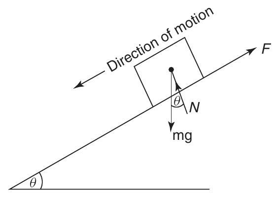Figure 15.3
Now the weight of the mass is mg and this will cause two other forces to act on the mass, namely $N$, and the component of the weight down the plane, namely $mg \sin \theta$, as shown by the vector diagram of Figure 15.4.
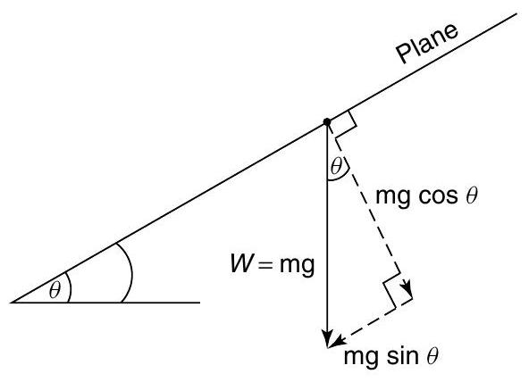Figure 15.4 Components of mg
It should be noted that N acts normal to the surface. Resolving forces parallel to the plane gives:
Forces up the plane $=$ forces down the plane i.e. $\quad F=mg \sin \theta$
Resolving force perpendicular to the plane gives: Forces 'up' $=$ forces 'down' i.e. $\quad N=mg \cos \theta$
Dividing equation (15.1) by (15.2) gives:
But $\frac{F}{N}=\mu$, hence, $\tan \theta=\mu$ where $\mu=$ the coefficient of friction, and $\theta=$ the angle of repose.
If $\theta$ is gradually increased until the body starts motion down the plane, then this value of $\theta$ is called the limiting angle of repose. A laboratory experiment based on the theory is a useful method of obtaining the maximum value of $\mu$ for static friction.
15.5 Motion up a plane with the pulling force $P$ parallel to the plane
In this case the frictional force $F$ acts down the plane, opposite to the direction of motion of the body, as shown in Figure 15.5.
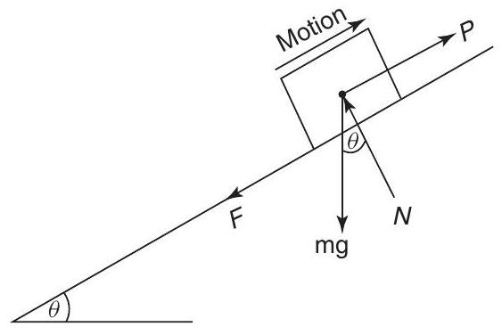Figure 15.5
The components of the weight mg will be the same as that shown in Figure 15.4.
Resolving forces parallel to the plane gives: $$ P=mg \sin \theta+F $$
Resolving forces perpendicular to the plane gives: $$ N=mg \cos \theta $$
For limiting friction, $$ F=\mu N $$
From equations (15.3) to (15.5), solutions of problems in this category that involve limiting friction can be solved.
Problem 7. Determine the value of the force $P$, which will just move the body of mass of 25 kg up the plane shown in Figure 15.6. It may be assumed that the coefficient of limiting friction, $\mu=0.3$ and $g=9.81\mathrm{~m}/ \mathrm{s}^{2}$.
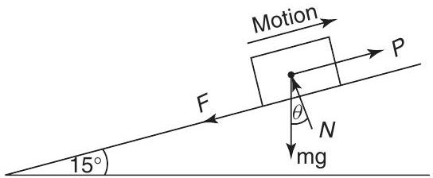Figure 15.6
From equation (15.4), $$ \begin{aligned} N &=25 \times 9.81 \times \cos 15^{\circ} \\ &=245.3 \times 0.966=\mathbf{236.9}\mathbf{~ N}\end{aligned} $$ From equation (15.5), $$ F=0.3 \times 236.9=71.1\mathrm{~N} $$ From equation (15.3), $$ \begin{aligned} P &=25 \times 9.81 \times \sin 15^{\circ}+71.1 \\ &=63.48+71.1\end{aligned} $$ i.e. force, $\boldsymbol{P}=\mathbf{134.6}\mathbf{~ N}$
15.6 Motion down a plane with the pulling force $\boldsymbol{P}$ parallel to the plane
In this case, the frictional force $F$ acts up the plane, opposite to the direction of motion of the plane, as shown in Figure 15.7. The components of the weight mg are shown in Figure 15.4, where it can be seen that the normal reaction, $N=mg \cos \theta$, and the component of weight parallel to and down the plane $=mg \sin \theta$.
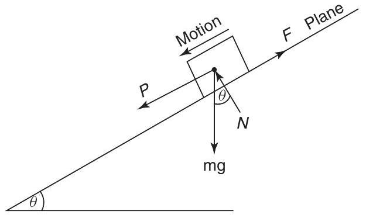Figure 15.7
Resolving forces perpendicular to the plane gives: $$ N=mg \cos \theta $$
Resolving forces parallel to the plane gives: $$ P+mg \sin \theta=F $$
When the friction is limiting, $$ F=\mu N $$
From equations (15.7) to (15.9), problems arising in this category can be solved.
Problem 8. If the mass of Problem 7 were subjected to the force $P$, which acts parallel to and down the plane, as shown in Figure 15.7, determine the value of $P$ to just move the body.
From equation (15.7), $$ N=25 \times 9.81 \cos 15^{\circ}=236.9\mathbf{~ N} $$ From equation (15.9), $$ \boldsymbol{F}=0.3 \times 236.9=\mathbf{71.1}\mathbf{~ N} $$ From equation (15.8), $$ P+25 \times 9.81 \sin 15^{\circ}=71.1 $$ i.e. $$ P+63.5=71.1 $$ from which, $$ \text {force}, \boldsymbol{P}=71.1-63.5=\mathbf{7.6}\mathbf{~ N} $$
From equations (15.6) and (15.10), it can be seen that the force required to move a body down the plane is so much smaller than to move the body up the plane.
15.7 Motion up a plane due to a horizontal force $P$
This motion, together with the primary forces, is shown in Figure 15.8. In this, the components of mg are as shown in Figure 15.4, and the components of the horizontal force $P$ are shown by the vector diagram of Figure 15.9.
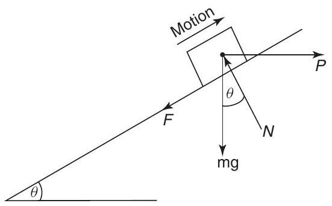Figure 15.8
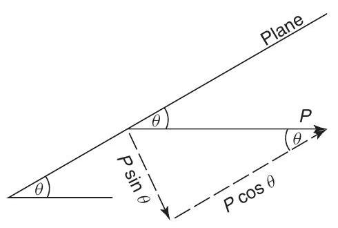Figure 15.9
Resolving perpendicular to the plane gives:
Forces 'up' $=$ forces 'down' i.e. $$ N=mg \cos \theta+P \sin \theta $$
Resolving parallel to the plane gives: $$ P \cos \theta=F+mg \sin \theta $$ and $$ F=\mu N $$
From equations (15.11) to (15.13), problems arising in this category can be solved.
Problem 9. If the mass of Problem 7 were subjected to a horizontal force $P$, as shown in Figure 15.8, determine the value of $P$ that will just cause motion up the plane.
Substituting equation (15.13) into equation (12) gives: $$ P \cos \theta=\mu N+mg \sin \theta $$ Substituting equation (15.11) into this gives: $$ P \cos \theta=\mu(mg \cos \theta+P \sin \theta)+mg \sin \theta $$ Rearranging for P : $$ P \cos \theta - \mu P \sin \theta = \mu mg \cos \theta + mg \sin \theta $$ $$ P(\cos \theta - \mu \sin \theta) = mg(\mu \cos \theta + \sin \theta) $$ $$ P = mg \frac{\mu \cos \theta + \sin \theta}{\cos \theta - \mu \sin \theta} $$ Dividing numerator and denominator by $\cos \theta$: $$ P = mg \frac{\mu + \tan \theta}{1 - \mu \tan \theta} $$ Using $\theta = 15^\circ$, $\mu = 0.3$, $m = 25$, $g = 9.81$: $$ P = 25 \times 9.81 \frac{0.3 + \tan 15^\circ}{1 - 0.3 \tan 15^\circ} $$ $$ P = 245.25 \frac{0.3 + 0.2679}{1 - 0.3 \times 0.2679} $$ $$ P = 245.25 \frac{0.5679}{1 - 0.08037} = 245.25 \frac{0.5679}{0.91963} $$ $$ P = 245.25 \times 0.6175 \approx 151.4 N $$ (Note: The derivation in the MMD goes via N and ends up with a slightly different calculation, which is likely a typo in the provided text. The formula derived $P = mg \frac{\mu + \tan \theta}{1 - \mu \tan \theta}$ is standard for horizontal force up an incline). The MMD calculation steps were:
Substituting equation (15.13) into equation (12) gives: $$ P \cos \theta=\mu N+mg \sin \theta $$ i.e. $$ N=\frac{P \cos \theta}{\mu}-\frac{mg \sin \theta}{\mu} $$ Equating equation (15.11) and equation (15.14) gives: $$ \qquad mg \cos \theta+P \sin \theta=\frac{P \cos \theta}{\mu}-\frac{mg \sin \theta}{\mu} $$ i.e. $\quad \begin{aligned} 25 \times 9.81 \cos 15^{\circ}+P \sin 15^{\circ} &=\frac{P \cos 15^{\circ}}{0.3}-\frac{25 \times 9.81 \sin 15^{\circ}}{0.3} \\ 245.3 \times 0.966+P \times 0.259 &=\frac{P \times 0.966}{0.3}-\frac{245.3 \times 0.259}{0.3}\end{aligned} $ from which, $$ 237+0.259 P =3.22 P-211.8 $$ and $$ 237+211.8 =3.22 P-0.259 P $$ $$ 448.8 =2.961 P $$ i.e. force $P=\frac{448.8}{2.961}=\mathbf{151.6}\mathbf{~ N}$
Problem 10. If the mass of Problem 9 were subjected to a horizontal force $P$, acting down the plane, as shown in Figure 15.10, determine the value of $P$ which will just cause motion down the plane.
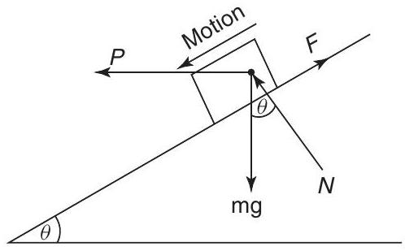Figure 15.10
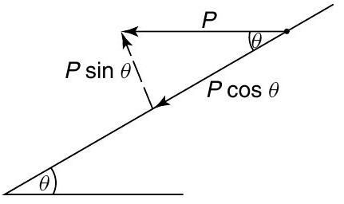Figure 15.11
The components for $mg$ are shown by the phasor diagram of Figure 15.4, and the components for $P$ are shown by the vector diagram of Figure 15.11. Resolving forces down the plane gives: $$ P \cos \theta+mg \sin \theta=F $$
Resolving forces perpendicular to the plane gives: Forces up $=$ forces do $$ N+P \sin \theta=mg \cos \theta $$ and $$ F=\mu N $$
Substituting equation (15.17) into equation (15.15) gives: $$ P \cos \theta+mg \sin \theta=\mu N $$ from which, $\quad N=\frac{P \cos \theta}{\mu}+\frac{mg \sin \theta}{\mu}$ From equation (15.16), $$ N=mg \cos \theta-P \sin \theta $$ Equating equations (15.18) and (15.19) gives $$ \frac{P \cos \theta}{\mu}+\frac{mg \sin \theta}{\mu}=mg \cos \theta-P \sin \theta $$ i.e. $$ \begin{aligned} \frac{P \cos 15^{\circ}}{0.3} &+\frac{25 \times 9.81 \sin 15^{\circ}}{0.3} \\ &=25 \times 9.81 \cos 15^{\circ}-P \sin 15^{\circ} \end{aligned} $$ $$ \begin{aligned} 3.22 P+211.6 &=236.9-0.259 P \\ P(3.22+0.259) &=236.9-211.6 \\ 3.479 P &=25.3 \end{aligned} $$ from which, $$ \text {force} P=\frac{25.3}{3.479}=7.27\mathrm{~N} $$ (Note: There might be minor differences in numerical results due to rounding in the original text or during the re-calculation based on the provided text's formula steps).
Problem 11. If in Problem 9, the contact surfaces were greased, so that the value of $\mu$ decreased and $P=50\mathrm{~N}$, determine the value of $\mu$ which will just cause motion down the plane.
The primary forces for this problem are shown in Figure 15.12, where it can be seen that $F$ is opposite to the direction of motion.
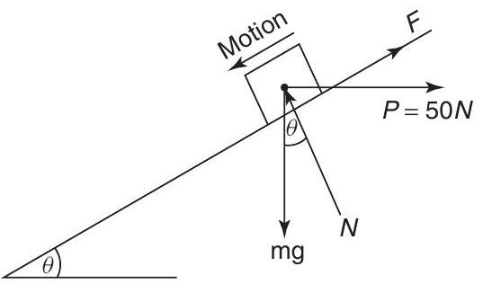Figure 15.12
Resolving forces perpendicular to the plane gives:
Forces 'up' $=$ forces 'down' $$ N=mg \cos \theta+P \sin \theta $$
Resolving forces parallel to the plane gives: $$ mg \sin \theta=F+P \cos \theta $$ and $$ F=\mu N $$
Substituting equation (15.22) into equation (15.21) gives: $$ mg \sin \theta=\mu N+P \cos \theta $$ Substituting equation (15.20) into equation (15.23) gives: $$ mg \sin \theta=\mu(mg \cos \theta+P \sin \theta)+P \cos \theta $$ i.e. $\quad \begin{aligned} 25 \times 9.81 \sin 15^{\circ}=\mu\left(25 \times 9.81 \cos 15^{\circ}\right. \\ \left.+50 \sin 15^{\circ}\right)+50 \cos 15^{\circ}\end{aligned} $ Hence $$ 63.48=\mu(236.89+12.94)+48.3 $$ $$ 63.48-48.3=\mu \times 249.83 $$ from which, $\quad \boldsymbol{\mu}=\frac{15.18}{249.83}=\mathbf{0.061}$
Now try the following exercise
Exercise 76 Further problems on friction on an inclined plane
Where necessary, take $g=9.81\mathrm{~m}/ \mathrm{s}^{2}$
- A mass of 40 kg rests on a flat horizontal surface as shown in Figure 15.13. If the coefficient of friction $\mu=0.2$, determine the minimum value of a horizontal force $P$ which will just cause it to move. [78.48 N]
Figure 15.13
- If the mass of Problem 1 were equal to 50 kg , what will be the value of $P$ ? [98.1 N]
- An experiment is required to obtain the static value of $\mu$; this is achieved by increasing the value of $\theta$ until the mass just moves down the plane, as shown in Figure 15.14. If the experimentally obtained value for $\theta$ were $22.5^{\circ}$, what is the value of $\mu$ ? [ $\mu=0.414$ ]
Figure 15.14
- If in Problem 3, $\mu$ were 0.6, what would be the experimental value of $\theta$ ? [$\theta=30.96^{\circ}$]
- For a mass of 50 kg just moving up an inclined plane, as shown in Figure 15.5, what would be the value of $P$, given that $\theta=20^{\circ}$ and $\mu=0.4$? $\quad[P=352.1\mathrm{~N}]$
- For a mass of 50 kg , just moving down an inclined plane, as shown in Figure 15.7, what would be the value of $P$, given that $\theta=20^{\circ}$ and $\mu=0.4$? $$[P=16.6\mathrm{~N}]$$
- If in Problem 5, $\theta=10^{\circ}$ and $\mu=0.5$, what would be the value of $P$? $$[P=326.7\mathrm{~N}]$$
- If in Problem 6, $\theta=10^{\circ}$ and $\mu=0.5$, what would be the value of $P$? $$[P=156.3\mathrm{~N}]$$
- Determine $P$ for Problem 5, if it were acting in the direction shown in Figure 15.8. $$[P=438.6\mathrm{~N}]$$
- Determine $P$ for Problem 6, if it were acting in the direction shown in Figure 15.10. $$[P=20.69\mathrm{~N}]$$
- Determine the value for $\theta$ which will just cause motion down the plane, when $P=$ 250 N and acts in the direction shown in Figure 15.12. It should be noted that in this problem, motion is down the plane. $$[\theta=19.85^{\circ}]$$
- If in Problem $11, \theta=30^{\circ}$, determine the value of $\mu$. $$[\mu=0.052]$$
15.8 The efficiency of a screw jack
Screw jacks (see Section 18.4, page 202) are often used to lift weights; one of their most common uses are to raise cars, so that their wheels can be changed. The theory described in Section 15.7 can be used to analyse screw jacks.
Consider the thread of the square-threaded screw jack shown in Figure 15.15.
Let $p$ be the pitch of the thread, i.e. the axial distance that the weight $W$ is lifted or lowered when the screw is turned through one complete revolution. From Figure 15.15, the motion of the screw in lifting the weight can be regarded as pulling the weight by a horizontal force $P$, up an incline $\theta$, where $$ \tan \theta=\frac{p}{\pi d} $$
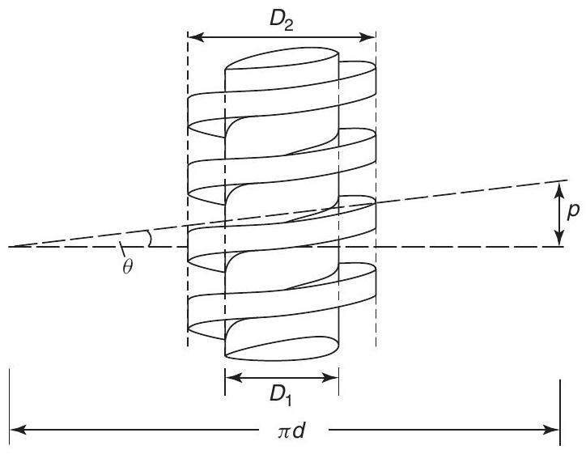Figure 15.15
as shown in Figure 15.15, and $$ d=\frac{(D_{1}+D_{2})}{2} $$ If $\mu$ is the coefficient of friction up the slope, then let $\tan \lambda=\mu$. Referring now to Figure 15.16, the screw jack can be analysed.
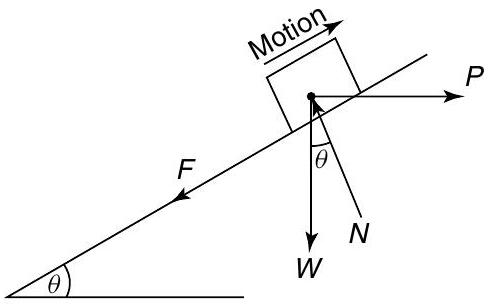Figure 15.16
Resolving normal to the plane gives: $$ N=W \cos \theta+P \sin \theta $$
Resolving parallel to the plane gives: $$ P \cos \theta=F+W \sin \theta $$ and $$ F=\mu N $$
Substituting equation (15.26) into equation (15.25) gives: $$ P \cos \theta=\mu N+W \sin \theta $$ Substituting equation (15.24) into equation (15.27) gives: $$ P \cos \theta=\mu(W \cos \theta+P \sin \theta)+W \sin \theta $$ Dividing each term by $\cos \theta$ and remembering that $\frac{\sin \theta}{\cos \theta}=\tan \theta$ gives: $$ P=\mu(W+P \tan \theta)+W \tan \theta $$ Rearranging gives: $$ P(1-\mu \tan \theta)=W(\mu+\tan \theta) $$ from which, $$ \begin{aligned} P &= \frac{W(\mu+\tan \theta)}{(1-\mu \tan \theta)} \\ &= \frac{W(\tan \lambda+\tan \theta)}{(1-\tan \lambda \tan \theta)}\end{aligned} $$ since $\mu=\tan \lambda$ However, from compound angle formulae, $$ \tan (\lambda+\theta)=\frac{(\tan \lambda+\tan \theta)}{(1-\tan \lambda \tan \theta)} $$ Hence, $$ P=W \tan (\theta+\lambda) $$
However, from Figure 15.15, $$ \begin{aligned} \tan \theta &=\frac{p}{\pi d} \\ \text {hence} \quad P &=\frac{W\left(\mu+\frac{p}{\pi d}\right)}{\left(1-\frac{\mu p}{\pi d}\right)}\end{aligned} $$ Multiplying top and bottom of equation (15.29) by $\pi d$ gives: $$ P=\frac{W(\mu \pi d+p)}{(\pi d-\mu p)} $$ The useful work done in lifting the weight $W$ a distance of $p$ $$ =W p $$ From Figure 15.15, the actual work done $$ \begin{aligned} &=P \times \pi d \\ &= \frac{W(\mu \pi d+p)}{(\pi d-\mu p)} \times \pi d\end{aligned} $$ Efficiency $\eta=\frac{\text {useful work done}}{\text {actual work done}}$ which is usually expressed as a percentage i.e. $$ \begin{aligned} \eta &= \frac{W p}{\frac{W(\mu \pi d+p) \times \pi d}{(\pi d-\mu p)}} \\ &= \frac{p(\pi d-\mu p)}{(\mu \pi d+p) \times \pi d}\end{aligned} $$ Dividing throughout by $\pi d$ gives: $$ \begin{aligned} \eta &= \frac{p\left(1-\frac{\mu p}{\pi d}\right)}{(\mu \pi d+p)} \\ &= \frac{p(1-\tan \lambda \tan \theta)}{\pi d\left(\mu+\frac{p}{\pi d}\right)} \\ &= \frac{p(1-\tan \lambda \tan \theta)}{\pi d(\tan \lambda+\tan \theta)}\end{aligned} $$ However, $$ \tan (\lambda+\theta)=\frac{\tan \lambda+\tan \theta}{(1-\tan \lambda \tan \theta)} $$ from compound angle formulae Hence, $$ \eta=\frac{p}{\pi d} \frac{1}{\tan (\lambda+\theta)} $$ but $$ \frac{p}{\pi d}=\tan \theta $$ hence, efficiency, $$ \eta=\frac{\tan \theta}{\tan (\lambda+\theta)} $$ From equations (15.31) and (15.32), the work lost in friction $$ =\frac{W(\mu \pi d+p)}{(\pi d-\mu p)} \times \pi d-Wp $$
Problem 12. The coefficient of friction on the sliding surface of a screw jack is 0.2 . If the pitch equals 1 cm , and $D_{1}=4\mathrm{~cm}$ and $D_{2}=5\mathrm{~cm}$, calculate the efficiency of the screw jack.
Working in millimetres, $$ \begin{aligned} d &=\frac{(D_{1}+D_{2})}{2}=\frac{(40+50)}{2}=45\mathrm{~mm} \\ p &=1\mathrm{~cm}=10\mathrm{~mm} \\ \quad \tan \theta &=\frac{p}{\pi d}=\frac{10}{\pi \times 45}=0.0707\end{aligned} $$ from which, $\quad \theta=\tan^{-1}(0.0707)=4.05^{\circ}$, and $\tan \lambda=\mu=0.2$ from which, $\quad \lambda=\tan^{-1}(0.2)=11.31^{\circ}$ From equation (15.33), $$ \begin{aligned} \text {efficiency}\boldsymbol{\eta} &= \frac{\tan \theta}{\tan (\lambda+\theta)} \\ &= \frac{0.0707}{\tan (11.31+4.05)^{\circ}} \\ &= \frac{0.0707}{0.2747}=0.257\end{aligned} $$ i.e. $\quad \boldsymbol{\eta}=\mathbf{25.7\%}$
Now try the following exercises
Exercise 77 Further problem on the efficiency of a screw jack
- The coefficient of friction on the sliding surface of a screw jack whose thread is similar to Figure 15.15, is 0.24 . If the pitch equals 12 mm , and $D_{1}=42\mathrm{~mm}$ and $D_{2}=56\mathrm{~mm}$, calculate the efficiency of the screw jack. [24.06%]
Exercise 78 Short answer questions on friction
- The $\qquad$ of frictional force depends on the $\qquad$ of surfaces in contact.
- The $\qquad$ of frictional force depends on the size of the $\qquad$ to the surfaces in contact.
- The $\qquad$ of frictional force is always $\qquad$ to the direction of motion.
- The coefficient of friction between surfaces should be a $\qquad$ value for materials concerned with bearings.
- The coefficient of friction should have a $\ldots \ldots .$. value for materials concerned with braking systems.
- The coefficient of dynamic or sliding friction is given by $\frac{\cdots \cdots}{. \cdots}$
- The coefficient of static or limiting friction is given by $\frac{\cdots \cdots}{\cdots}$. when . . . . . . . . is just about to take place.
- Lubricating surfaces in contact result in a $\qquad$ of the coefficient of friction.
- Briefly discuss the factors affecting the size and direction of frictional forces.
- Name three practical applications where a low value of coefficient of friction is desirable and state briefly how this is achieved in each case.
- Name three practical applications where a high value of coefficient of friction is required when transmitting forces and discuss how this is achieved.
- For an object on a surface, two different values of coefficient of friction are possible. Give the names of these two coefficients of friction and state how their values may be obtained.
- State the formula for the angle of repose.
- What theory can be used for calculating the efficiency of a screw jack.
Exercise 79 Multi-choice questions on friction (Answers on page 285)
- A block of metal requires a frictional force $F$ to keep it moving with constant velocity across a surface. If the coefficient of friction is $\mu$, then the normal force $N$ is given by: (a) $\frac{\mu}{F}$ (b) $\mu F$ (c) $\frac{F}{\mu}$ (d) $F$
- The unit of the linear coefficient of friction is: (a) newtons (b) radians (c) dimensionless (d) newtons/metre
Questions 3 to 7 refer to the statements given below. Select the statement required from each group given. (a) The coefficient of friction depends on the type of surfaces in contact. (b) The coefficient of friction depends on the force acting at right angles to the surfaces in contact. (c) The coefficient of friction depends on the area of the surfaces in contact. (d) Frictional force acts in the opposite direction to the direction of motion. (e) Frictional force acts in the direction of motion. (f) A low value of coefficient of friction is required between the belt and the wheel in a belt drive system. (g) A low value of coefficient of friction is required for the materials of a bearing. (h) The dynamic coefficient of friction is given by (normal force)/(frictional force) at constant speed. (i) The coefficient of static friction is given by (applied force) $\div$ (frictional force) as sliding is just about to start. (j) Lubrication results in a reduction in the coefficient of friction.
- Which statement is false from (a), (b), (f) and (i)?
- Which statement is false from (b), (e), (g) and (j)?
- Which statement is true from (c), (f), (h) and (i)?
- Which statement is false from (b), (c), (e) and (j)?
- Which statement is false from (a), (d), $(\mathrm{g})$ and $(\mathrm{h})$?
- The normal force between two surfaces is 100 N and the dynamic coefficient of friction is 0.4 . The force required to maintain a constant speed of sliding is: (a) 100.4 N (b) 40 N (c) 99.6 N (d) 250 N
- The normal force between two surfaces is 50 N and the force required to maintain a constant speed of sliding is 25 N . The dynamic coefficient of friction is: (a) 25 (b) 2 (c) 75 (d) 0.5
- The maximum force, which can be applied to an object without sliding occurring, is 60 N , and the static coefficient of friction is 0.3. The normal force between the two surfaces is: (a) 200 N (b) 18 N (c) 60.3 N (d) 59.7 N
- The formula for the angle of repose is: (a) $F=\mu N$ (b) $\tan \theta=\mu$ (c) $\mu=\frac{F}{N}$ (d) $\tan \theta=\frac{\sin \theta}{\cos \theta}$